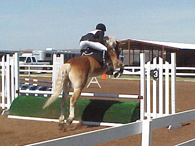

Our First Novice
Event (We were 4th after dressage with a 38.5.
Unfortunately we had
a refusal in stadium. Cross country he
was great, and even forward
for the last half. My trainer told me
to trot down the bank into the water.
Well, Adamir thought leaping into the
water would be much more fun. We
had a couple of awkward jumps on cross
country, but once he got rolling
we flew over the course. We did have 15
seconds of time penalties,
but we had a clear round over our first
Novice cross country course!)
He looked lovely in warm-up. He was laterally responsive, but had
some resistance to the left.
This test has a lot of trot work. That worked in our favor. A lot
of 7s for consistent work.
It was pretty windy and cold, that's why my ears were wrapped.
In warm-up he didn't want to pick up his left lead canter and stay
in frame. I think he was sore from the cross country work-out on Saturday.
I told him that I'd let him be above the bit with his head, if he'd just
get the lead right.
He didn't have trouble with his right lead (usually his bad side).
Nice stretchy walk.
The judge remarked on the test about his turnout and thanked me
for it...
He kept looking around during stadium. He wasn't really concentrating
on the fences.

He came up to this one and wanted to take a look. We didn't have
enough forward momentum and it ended in a refusal. We came back at it,
and he jumped it like he really didn't trust it (look at the clearance
between him and the jump)...
He was looking at the next half of the in and out, so was I...